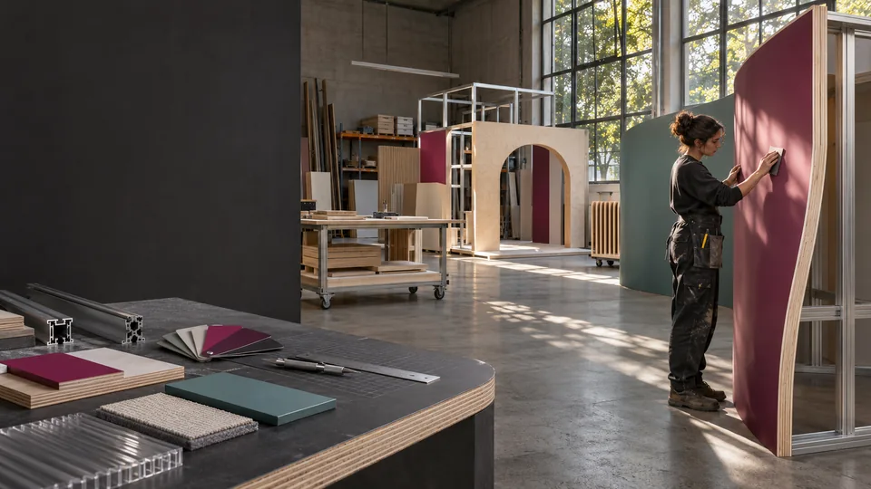
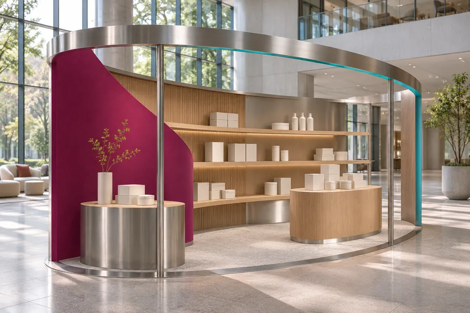
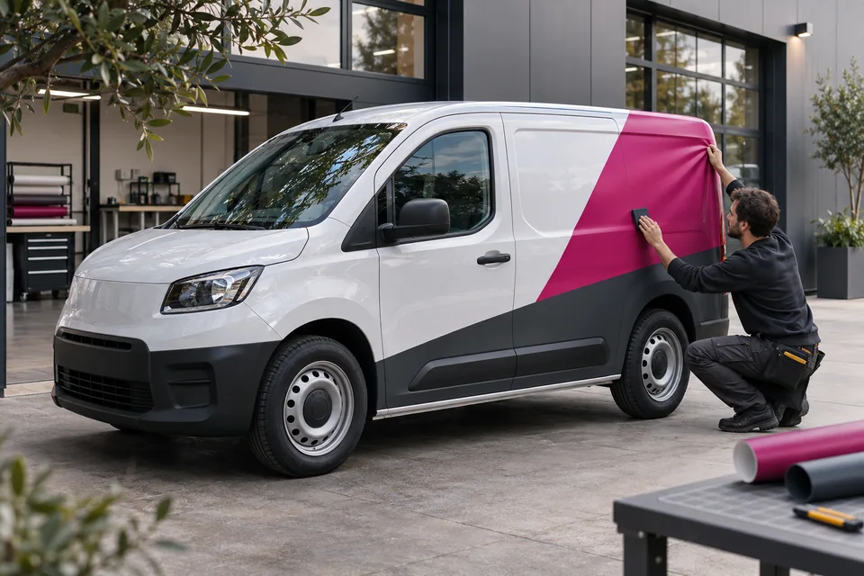

Branding y ambientación
Gráficos murales, señalización y aplicaciones de marca para espacios.


En Media Print producimos branding de espacios, exhibidores, estructuras y rotulación para marcas que necesitan llevar una idea al mundo físico.
01 / Qué hacemos
Revisamos tu identidad y objetivo, definimos cómo producir cada elemento y cuidamos materiales, medidas, acabados e implementación.
Branding de espacios y punto de venta
Producimos aplicaciones para espacios, comunicación comercial y exhibición, con atención a la identidad de tu marca.

Gráficos murales, señalización y aplicaciones de marca para espacios.
Material POP, exhibidores, displays y gráficos para presentar tu marca o producto.
Stands, exhibiciones, muebles publicitarios y estructuras metálicas.
Rotulación y desarrollos especiales
Adaptamos la producción a vehículos, campañas y necesidades que requieren una pieza especial.

Branding parcial o completo y gráficos para flotas.
Prototipos, elementos tridimensionales y dispositivos diseñados para un proyecto específico.
Proyectos
Entre nuestras referencias de producción están bancas de estadio, stand Nescafé Ice, proyectos Maggi y latas de Pepsi.
Fotografía 1 de 3: Branding y ambientación.
Media Print
Compártenos tu idea o requerimiento y conversemos sobre cómo llevarlo a una pieza terminada.
Consultar producción